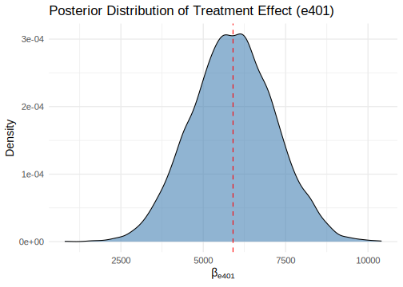

8.3 Stochastic volatility models
A notable example of non-linear and non-Gaussian state-space models is stochastic volatility models (SVMs), which are widely used to model the volatility of financial returns. SVMs have gained significant attention due to their flexibility, ability to capture complex dynamics such as asymmetries, and ease of generalization to simultaneously model multiple returns, making them advantageous over generalized autoregressive conditional heteroskedasticity (GARCH) models proposed by Bollerslev (1986). However, estimating SVMs is more challenging than estimating GARCH models. This is because GARCH models set variance in a deterministic manner, whereas SVMs do so stochastically. Consequently, GARCH models are typically estimated using maximum likelihood methods, while SVMs require Bayesian approaches, adding complexity to the estimation process.
The specification of the stochastic volatility model is given by \[\begin{align} y_t&=\boldsymbol{x}_t^{\top}\boldsymbol{\beta}+\exp\left\{0.5h_t\right\}\mu_t& \text{(Observation equation)} \tag{8.8}\\ h_t&=\mu+\phi(h_{t-1}-\mu)+\sigma w_t& \text{(State equation)} \tag{8.9}, \end{align}\] where \(y_t\) are the log-returns, \(\boldsymbol{x}_t\) are controls, \(\boldsymbol{\beta}\) are time-invariant location parameters, \(\mu_t\sim N(0,1)\), \(w_t\sim N(0,1)\), \(\mu_t\perp w_t\), the initial log-variance process \(h_0\sim N(\mu, \sigma^2/(1-\phi^2))\), \(\mu\), \(\phi\) and \(\sigma\) are the level, persistence and standard deviation of the log-variance, respectively.
Given the specification in Equations (8.8) and (8.9), we can write the observation equation as \[ \log\left\{(y_t-\boldsymbol{x}_t^{\top}\boldsymbol{\beta})^2\right\} = h_t + \log(\mu_t^2), \] which leads to a linear, but non-Gaussian, state-space model. Kastner and Frühwirth-Schnatter (2014) approximate the distribution of \(\log(\mu_t^2)\) by a mixture of normal distributions, that is, \[ \log(\mu_t^2)\mid l_t \sim N(m_{l_t},s_{l_t}^2), \] where \(l_t \in \{1, 2, \dots, 10\}\) defines the mixture component indicator at time \(t\). Thus, the model can be written as \[ \log\left\{(y_t-\boldsymbol{x}_t^{\top}\boldsymbol{\beta})^2\right\} = h_t + \log(\mu_t^2), \] and \[ h_t = \mu + \phi(h_{t-1} - \mu) + \sigma w_t. \] This forms a linear and conditionally Gaussian state-space model, where \[ \log\left\{(y_t-\boldsymbol{x}_t^{\top}\boldsymbol{\beta})^2\right\} = m_{l_t} + h_t + \mu_t, \] and \[ \mu_t \sim N(0, s_{l_t}^2). \]
We use the stochvol package in our GUI to perform MCMC inference in the SVMs (Hosszejni and Kastner 2021); this package is based on the MCMC algorithms proposed by Kastner and Frühwirth-Schnatter (2014). The default prior distributions in the stochvol package are: \[ \boldsymbol{\beta} \sim N(\boldsymbol{b}_0, \boldsymbol{B}_0), \quad \mu \sim N(\mu_0, \sigma_{\mu0}^2), \quad \frac{\phi+1}{2} \sim B(\alpha_0, \beta_0), \quad \sigma^2 \sim G\left(\frac{1}{2}, \frac{1}{2\sigma^2_{\sigma^2}}\right). \] The prior distribution for \(\phi\) is set to ensure stationarity of the process (\(\phi \in (-1,1)\)). In most applications, \(\phi \approx 1\), so the authors of the package recommend setting \(\alpha_0 \gtrsim 5\) and \(\beta_0 \approx 1.5\). The prior distribution for \(\sigma\) is \(|N(0, \sigma^2_{\sigma^2})|\) (a half-normal distribution). This is recommended by the authors since the conjugate inverse-gamma distribution does not work well in this case, as it bounds \(\sigma\) away from 0, which is undesirable when modeling the log-variance of log-returns.
The following Algorithm shows how to perform inference in stochastic volatility models using our GUI. See also Chapter 5 for details regarding the dataset structure.
Algorithm: Stochastic Volatility Models
Select Time series Model on the top panel
Select Stochastic volatility using the left radio button
Upload the dataset selecting first if there is a header in the file, and the kind of separator in the csv file of the dataset (comma, semicolon, or tab). Then, use the Browse button under the Choose File legend
Select MCMC iterations, burn-in, and thinning parameters using the Range sliders
Set the hyperparameters: the mean and standard deviation of the Gaussian prior for the regression parameters, mean and standard deviation for the Gaussian prior distribution of the level of the log-volatility, shape parameters for the Beta prior distribution of the transformed persistence parameter, and the positive real number, which stands for the scaling of the transformed volatility of log-volatility. This step is not necessary as by default our GUI uses default values in the stochvol package
Click the Go! button
Analyze results
Download posterior chains of the fixed coefficients, and the states using the Download Results button
Example: Simulation exercise of the stochastic volatility model
The following code shows how to simulate and perform Bayesian inference in the stochastic volatility model using the function svsample from the stochvol package. We set the stochastic volatility parameters to \(\mu = -10\), \(\phi = 0.95\), and \(\sigma = 0.3\). We assume two regressors, which are distributed as standard normal, with \(\boldsymbol{\beta} = [0.5 \ 0.3]^{\top}\), and the sample size is 1,250, which corresponds to approximately 5 years of daily returns. We use the default hyperparameters: 10,000 MCMC iterations, a burn-in of 5,000, and a thinning parameter of 5.
The summary statistics of the posterior draws show that all 95% credible intervals encompass the population parameters, and the posterior chains appear to have converged. The Figure displays the posterior results for the volatility (\(h_t\)). The posterior mean (blue) follows the “observed” series (black), and the 95% credible intervals (light blue) typically encompass the “observed” series.
rm(list = ls()); set.seed(010101)
T <- 1250; K <- 2
X <- matrix(rnorm(T*K), T, K)
B <- c(0.5, 0.3); mu <- -10; phi <- 0.95; sigma <- 0.3
h <- numeric(T); y <- numeric(T)
h[1] <- rnorm(1, mu, sigma / sqrt(1 - phi^2)) # Initial state
y[1] <- X[1,]%*%B + rnorm(1, 0, exp(h[1] / 2)) # Initial observation
for (t in 2:T) {
h[t] <- mu + phi*(h[t-1]-mu) + rnorm(1, 0, sigma)
y[t] <- X[t,]%*%B + rnorm(1, 0, sd = exp(0.5*h[t]))
}
df <- as.data.frame(cbind(y, X))
colnames(df) <- c("y", "x1", "x2")
MCMC <- 10000; burnin <- 10000; thin <- 5
res <- stochvol::svsample(y, designmatrix = X, draws = MCMC, burnin = burnin, thin = thin, priormu = c(0, 100), priorsigma = c(1), priorphi = c(5, 1.5), priorbeta = c(0, 10000))## Done!## Summarizing posterior draws...##
## Iterations = 10005:20000
## Thinning interval = 5
## Number of chains = 1
## Sample size per chain = 2000
##
## 1. Empirical mean and standard deviation for each variable,
## plus standard error of the mean:
##
## Mean SD Naive SE Time-series SE
## mu -9.9350 0.14258 0.0031882 0.0034505
## phi 0.9414 0.01661 0.0003714 0.0009051
## sigma 0.2733 0.03855 0.0008619 0.0024256
##
## 2. Quantiles for each variable:
##
## 2.5% 25% 50% 75% 97.5%
## mu -10.2077 -10.0238 -9.9301 -9.8439 -9.6508
## phi 0.9032 0.9315 0.9434 0.9531 0.9689
## sigma 0.2077 0.2461 0.2700 0.2961 0.3608##
## Iterations = 10005:20000
## Thinning interval = 5
## Number of chains = 1
## Sample size per chain = 2000
##
## 1. Empirical mean and standard deviation for each variable,
## plus standard error of the mean:
##
## Mean SD Naive SE Time-series SE
## beta_0 0.5001 0.0001851 4.139e-06 3.936e-06
## beta_1 0.2999 0.0001799 4.023e-06 4.023e-06
##
## 2. Quantiles for each variable:
##
## 2.5% 25% 50% 75% 97.5%
## beta_0 0.4997 0.4999 0.5001 0.5002 0.5004
## beta_1 0.2995 0.2998 0.2999 0.3000 0.3002##
## Attaching package: 'dplyr'## The following objects are masked from 'package:stats':
##
## filter, lag## The following objects are masked from 'package:base':
##
## intersect, setdiff, setequal, unionlibrary(ggplot2)
library(latex2exp)
ggplot2::theme_set(theme_bw())
x_means <- colMeans(ht)
x_quantiles <- apply(ht, 2, function(x) quantile(x, probs = c(0.025, 0.975)))
df <- tibble(t = seq(1, T), mean = x_means, lower = x_quantiles[1, ], upper = x_quantiles[2, ], x_true = h, observations = y)
plot_filtering_estimates <- function(df) {
pchap8 <- ggplot(data = df, aes(x = t)) + geom_ribbon(aes(ymin = lower, ymax = upper), alpha = 1, fill = "lightblue") + geom_line(aes(y = x_true), colour = "black", alpha = 1, linewidth = 0.5) + geom_line(aes(y = mean), colour = "blue", linewidth = 0.5) + ylab(TeX("$h_{t}$")) + xlab("Time")
print(pchap8)
}
plot_filtering_estimates(df)
So far, we have used MCMC algorithms to perform inference in state-space models. These algorithms require all observations to estimate the unknown parameters, a process referred to as offline or batch inference. However, this approach has limitations when online inference is needed, as every new observation requires simulating a new posterior chain. This is because MCMC algorithms do not naturally adapt to sequential updates. In contrast, particle filter algorithms, which are a subset of sequential Monte Carlo (SMC) methods, are specifically designed for sequential use, making them suitable for online inference.
Remember from Chapter 4 that particle filters (sequential Monte Carlo) are algorithms that allow computing a numerical approximation to the filtering distribution \(\pi(\boldsymbol{\theta}_{1:t}\mid \boldsymbol{y}_{1:t})\) sequentially in time. This is particularly relevant in non-linear and non-Gaussian models where there is no analytical solution for the filtering distribution.
The following code shows how to perform particle filtering in the vanilla stochastic volatility model assuming that the proposal distribution is the conditional prior distribution, that is, \(q(h_t\mid h_{t-1},y_t)=\pi(h_t\mid h_{t-1})\), which is normal with mean \(\mu+\phi(h_{t-1}-\mu)\) and variance \(\sigma^2\). This choice implies that the incremental importance weights are equal to \(p(y_t\mid h_t)\), which is \(N(0,\exp(h_t))\). Therefore, the weights are proportional to the likelihood function. We perform multinomial resampling every time period in the code, and start the algorithm in the stationary distribution of \(h_t\). Remember that there are other resampling approaches that are more efficient, for instance, residual resampling. We ask in Exercise 7 to modify this code to perform resampling when the effective sample size is lower than 50% of the initial number of particles. In addition, we ask to program a sequential importance sampling, and check why is important to perform resampling in this simple example.
rm(list = ls()); set.seed(010101)
T <- 1250; mu <- -10; phi <- 0.95; sigma <- 0.3
h <- numeric(T); y <- numeric(T)
h[1] <- rnorm(1, mu, sigma / sqrt(1 - phi^2))
y[1] <- rnorm(1, 0, exp(h[1] / 2))
for (t in 2:T) {
h[t] <- mu + phi*(h[t-1]-mu) + rnorm(1, 0, sigma)
y[t] <- rnorm(1, 0, sd = exp(0.5*h[t]))
}
N <- 10000
log_Weights <- matrix(NA, N, T) # Log weights
Weights <- matrix(NA, N, T) # Weights
WeightsST <- matrix(NA, N, T) # Normalized weights
WeightsSTT <- matrix(1/N, N, T) # Normalized weights bar
particles <- matrix(NA, N, T) # Particles
particlesT <- matrix(NA, N, T) # Particles bar
logalphas <- matrix(NA, N, T) # Incremental importance
particles[, 1] <- rnorm(N, mu, sigma / sqrt(1 - phi^2)) # Stationary prior
log_Weights[, 1] <- dnorm(y[1], 0, sd = exp(0.5*particles[,1]), log = TRUE) # Likelihood
Weights[, 1] <- exp(log_Weights[, 1])
WeightsST[, 1] <- Weights[, 1] / sum(Weights[, 1])
ind <- sample(1:N, size = N, replace = TRUE, prob = WeightsST[, 1]) # Resample
particles[, 1] <- particles[ind, 1] # Resampled particles
particlesT[, 1] <- particles[, 1] # Resampled particles
WeightsST[, 1] <- rep(1/N, N) # Resampled weights
pb <- txtProgressBar(min = 0, max = T, style = 3)## | | | 0%for (t in 2:T) {
particles[, t] <- rnorm(N, mu + phi*(particles[, t - 1] - mu), sigma) # Sample from proposal
logalphas[, t] <- dnorm(y[t], 0, sd = exp(0.5*particles[,t]), log = TRUE)
Weights[, t] <- exp(logalphas[, t])
WeightsST[, t] <- Weights[, t] / sum(Weights[, t])
if(t < T){
ind <- sample(1:N, size = N, replace = TRUE, prob = WeightsST[, t])
particles[, 1:t] <- particles[ind, 1:t]
}else{
ind <- sample(1:N, size = N, replace = TRUE, prob = WeightsST[, t])
particlesT[, 1:t] <- particles[ind, 1:t]
}
setTxtProgressBar(pb, t)
}## | | | 1% | |= | 1% | |= | 2% | |== | 2% | |== | 3% | |== | 4% | |=== | 4% | |=== | 5% | |==== | 5% | |==== | 6% | |===== | 6% | |===== | 7% | |===== | 8% | |====== | 8% | |====== | 9% | |======= | 9% | |======= | 10% | |======= | 11% | |======== | 11% | |======== | 12% | |========= | 12% | |========= | 13% | |========= | 14% | |========== | 14% | |========== | 15% | |=========== | 15% | |=========== | 16% | |============ | 16% | |============ | 17% | |============ | 18% | |============= | 18% | |============= | 19% | |============== | 19% | |============== | 20% | |============== | 21% | |=============== | 21% | |=============== | 22% | |================ | 22% | |================ | 23% | |================ | 24% | |================= | 24% | |================= | 25% | |================== | 25% | |================== | 26% | |=================== | 26% | |=================== | 27% | |=================== | 28% | |==================== | 28% | |==================== | 29% | |===================== | 29% | |===================== | 30% | |===================== | 31% | |====================== | 31% | |====================== | 32% | |======================= | 32% | |======================= | 33% | |======================= | 34% | |======================== | 34% | |======================== | 35% | |========================= | 35% | |========================= | 36% | |========================== | 36% | |========================== | 37% | |========================== | 38% | |=========================== | 38% | |=========================== | 39% | |============================ | 39% | |============================ | 40% | |============================ | 41% | |============================= | 41% | |============================= | 42% | |============================== | 42% | |============================== | 43% | |============================== | 44% | |=============================== | 44% | |=============================== | 45% | |================================ | 45% | |================================ | 46% | |================================= | 46% | |================================= | 47% | |================================= | 48% | |================================== | 48% | |================================== | 49% | |=================================== | 49% | |=================================== | 50% | |=================================== | 51% | |==================================== | 51% | |==================================== | 52% | |===================================== | 52% | |===================================== | 53% | |===================================== | 54% | |====================================== | 54% | |====================================== | 55% | |======================================= | 55% | |======================================= | 56% | |======================================== | 56% | |======================================== | 57% | |======================================== | 58% | |========================================= | 58% | |========================================= | 59% | |========================================== | 59% | |========================================== | 60% | |========================================== | 61% | |=========================================== | 61% | |=========================================== | 62% | |============================================ | 62% | |============================================ | 63% | |============================================ | 64% | |============================================= | 64% | |============================================= | 65% | |============================================== | 65% | |============================================== | 66% | |=============================================== | 66% | |=============================================== | 67% | |=============================================== | 68% | |================================================ | 68% | |================================================ | 69% | |================================================= | 69% | |================================================= | 70% | |================================================= | 71% | |================================================== | 71% | |================================================== | 72% | |=================================================== | 72% | |=================================================== | 73% | |=================================================== | 74% | |==================================================== | 74% | |==================================================== | 75% | |===================================================== | 75% | |===================================================== | 76% | |====================================================== | 76% | |====================================================== | 77% | |====================================================== | 78% | |======================================================= | 78% | |======================================================= | 79% | |======================================================== | 79% | |======================================================== | 80% | |======================================================== | 81% | |========================================================= | 81% | |========================================================= | 82% | |========================================================== | 82% | |========================================================== | 83% | |========================================================== | 84% | |=========================================================== | 84% | |=========================================================== | 85% | |============================================================ | 85% | |============================================================ | 86% | |============================================================= | 86% | |============================================================= | 87% | |============================================================= | 88% | |============================================================== | 88% | |============================================================== | 89% | |=============================================================== | 89% | |=============================================================== | 90% | |=============================================================== | 91% | |================================================================ | 91% | |================================================================ | 92% | |================================================================= | 92% | |================================================================= | 93% | |================================================================= | 94% | |================================================================== | 94% | |================================================================== | 95% | |=================================================================== | 95% | |=================================================================== | 96% | |==================================================================== | 96% | |==================================================================== | 97% | |==================================================================== | 98% | |===================================================================== | 98% | |===================================================================== | 99% | |======================================================================| 99% | |======================================================================| 100%FilterDist <- colSums(particles * WeightsST)
SDFilterDist <- (colSums(particles^2 * WeightsST) - FilterDist^2)^0.5
FilterDistT <- colSums(particlesT * WeightsSTT)
SDFilterDistT <- (colSums(particlesT^2 * WeightsSTT) - FilterDistT^2)^0.5
MargLik <- colMeans(Weights)
# plot(MargLik, type = "l")
library(dplyr)
library(ggplot2)
require(latex2exp)
ggplot2::theme_set(theme_bw())
Tfig <- 250
keepFig <- 1:Tfig
df <- tibble(t = keepFig,
mean = FilterDist[keepFig],
lower = FilterDist[keepFig] - 2*SDFilterDist[keepFig],
upper = FilterDist[keepFig] + 2*SDFilterDist[keepFig],
meanT = FilterDistT[keepFig],
lowerT = FilterDistT[keepFig] - 2*SDFilterDistT[keepFig],
upperT = FilterDistT[keepFig] + 2*SDFilterDistT[keepFig],
x_true = h[keepFig])
plot_filtering_estimates <- function(df) {
pchap8l <- ggplot(data = df, aes(x = t)) +
geom_ribbon(aes(ymin = lower, ymax = upper), alpha = 1,
fill = "lightblue") +
geom_line(aes(y = x_true), colour = "black", alpha = 1,
linewidth = 0.5) +
geom_line(aes(y = mean), colour = "blue", linewidth = 0.5) +
geom_line(aes(y = meanT), colour = "purple", linewidth = 0.5) +
ylab(TeX("$h_{t}$")) + xlab("Time")
print(pchap8l)
}
plot_filtering_estimates(df)The Figure illustrates the filtering recursion using SMC with uneven weights (blue line), even weights (purple line), bands corresponding to plus/minus two standard deviations (light blue shaded area), and the true state (black line).2 The results indicate that SMC performs well even with a simple implementation, with no significant differences between using even and uneven weights (see Chapter 4).
In this example, we use the population parameters to perform the filtering recursion. However, this is not the case in practice, as we must estimate the time-invariant parameters. Therefore, more elaborate algorithms are required to achieve this. For instance, Andrieu, Doucet, and Holenstein (2010) propose particle Markov chain Monte Carlo, a family of methods that combines MCMC and SMC. See Dahlin and Schön (2019) for a tutorial on particle Metropolis-Hastings in R. A potential practical solution for applications that require sequential updating of a posterior distribution over an unbounded time horizon is to estimate the time-invariant parameters offline using MCMC algorithms up to a specific time period, and then update the state vector sequentially online during subsequent time periods, iterating this process. This is not optimal, but it can be practical.
References
stochvol and factorstochvol.” Journal of Statistical Software 100 (12): 1–34. https://doi.org/10.18637/jss.v100.i12.
This standard deviation estimates the conditional posterior’s standard deviation derived from the particles, not the estimator’s standard deviation. The latter requires several independent particle runs on the same data.↩︎